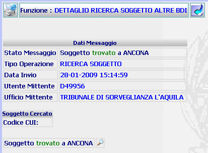

DETTAGLIO RICERCA SOGGETTO ALTRE BDI: La funzione consente di visualizzare il dettaglio della ricerca del soggetto ricercato.
LE MASCHERE VIDEO
La funzione viene realizzata attraverso la maschera seguente.

COME FARE PER ...
Per
visualizzare il
dettaglio del
soggetto trovato su altra BDI
l'utente deve selezionare il
pulsante

PULSANTI
Oltre al
pulsante
 , facente parte del gruppo di
pulsanti di "Uso Comune", sono
presenti i seguenti pulsanti
, facente parte del gruppo di
pulsanti di "Uso Comune", sono
presenti i seguenti pulsanti
|
PULSANTE |
DESCRIZIONE |
|
|
Questo pulsante ha lo
scopo di visualizzare il
dettaglio del
soggetto trovato su altra BDI |